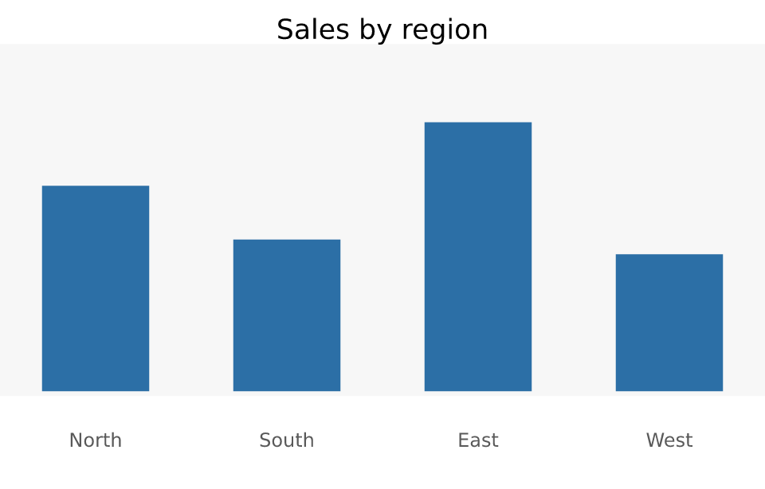

Accessible output, and fonts you can trust
Source:vignettes/accessible-output.Rmd
accessible-output.RmdTwo things in this article are less features than promises being kept: a PDF a screen reader can navigate, and a check on the one part of vellum’s determinism claim that vellum does not control.
Marks that mean something
vellum has carried per-mark id, role and
name since early on, and has emitted them into SVG as
data-* and ARIA role. The same channel now
builds a PDF structure tree.
The important thing is that this needs no new annotation API. If a scene is already marked up for the web, it is already marked up for PDF.
region <- c("North", "South", "East", "West")
sales <- c(42, 31, 55, 28)
plot <- vl_scene(5, 3.2, dpi = 96, bg = "white") |>
draw(rect_grob(y = 0.55, height = 0.72, gp = vl_gpar(fill = "grey97", col = NA),
role = "presentation", name = "panel background")) |>
draw(text_grob("Sales by region", y = 0.94, gp = vl_gpar(fontsize = 13),
role = "heading", name = "Sales by region"))
for (i in seq_along(region)) {
plot <- plot |>
draw(rect_grob(x = (i - 0.5) / 4, y = 0.2 + sales[i] / 200,
width = 0.14, height = sales[i] / 100,
gp = vl_gpar(fill = "#2C6FA6", col = NA), role = "img",
name = sprintf("%s: %d units", region[i], sales[i]))) |>
draw(text_grob(region[i], x = (i - 0.5) / 4, y = 0.1,
gp = vl_gpar(fontsize = 9, col = "grey35"),
role = "presentation", name = region[i]))
}
plot <- describe(plot,
title = "Sales by region",
desc = "A bar chart of unit sales across four regions. East is highest at 55; West lowest at 28."
)
display(plot)
name becomes the alt text, so write it as a sentence
someone will hear, not as an internal identifier —
"East: 55 units", not "bar_3".
pdf <- scene_pdf(plot)
c(tagged = length(grepRaw("StructTreeRoot", pdf, fixed = TRUE)) > 0,
has_alt = length(grepRaw("/Alt(", pdf, fixed = TRUE)) > 0)
#> tagged has_alt
#> TRUE TRUEWhat lands in the file: a StructTreeRoot, a
Figure for the plot as a whole carrying the
describe() text, and one structure element per marked-up
mark. They go in draw order, which for a graphic
is reading order — it is the order the author put the marks
in.
Roles
role is an ARIA-flavoured string; PDF structure types
are not ARIA. The mapping is therefore deliberately small and documented
rather than a general translation:
role |
PDF structure element |
|---|---|
"heading" |
H1, titled from name
|
"paragraph", "text"
|
P |
"caption" |
Caption |
"listitem" |
LI |
"presentation", "none",
"decorative"
|
Artifact — skipped by assistive tech |
| anything else |
Figure, with Alt from
name
|
Figure is the default because it is the right one for a
mark in a graphic, and because it is the type PDF/UA requires alt text
for.
The artifact case earns its place: a screen reader announcing every
gridline and panel background is worse than one announcing none. Mark
the furniture "presentation" and it is excluded from the
tree entirely.
Two things this does not change
Pixels. Structure is metadata; a marked-up scene rasterises identically to the same scene without the marks.
Untagged output. A scene with no marked-up nodes produces exactly the PDF it always did, byte for byte. Tagging is opt-in by virtue of annotating.
There is one interaction worth knowing: per-mark tagging and the
whole-figure tag from describe() alone are mutually
exclusive, because PDF does not allow one tagged content span inside
another. When any mark is annotated, the marks own the tagging and the
describe() text becomes the root figure’s alt.
Fonts you can trust
DESIGN.md opens by claiming identical pixels on every OS
and in CI. Layout, shaping and rasterisation deliver that. Font
resolution does not, and cannot: "sans" is
Helvetica on macOS, DejaVu Sans on many Linux systems, Arial elsewhere.
The pixels then differ for a reason the claim does not cover, and until
now nothing said so.
scene_fonts() reports the font files a scene’s
text actually resolved to — read off the shaped glyphs, so it says what
was used rather than what would be picked if asked again:
scene_fonts(plot)
#> path index glyphs file
#> 1 /usr/share/fonts/truetype/dejavu/DejaVuSans.ttf 0 33 DejaVuSans.ttf
#> exists
#> 1 TRUEfont_pin() records that, and font_check()
compares later:
pin <- font_pin(plot)
pin
#> <vellum_font_pin>: 1 font face
#> • DejaVuSans.ttf (face 0, 33 glyphs)
nrow(font_check(plot, pin))
#> [1] 0
other <- vl_scene(4, 2, dpi = 96) |>
draw(text_grob("hello", gp = vl_gpar(fontfamily = "mono")))
font_check(other, pin, on_mismatch = "ignore")What it is for
A pin turns “identical pixels” from an assumption into an assertion. Put one next to a reference image and a failing comparison can be attributed:
test_that("the figure is unchanged", {
expect_equal(nrow(font_check(my_plot(), readRDS("fonts.rds"))), 0)
expect_snapshot_file(render(my_plot(), "plot.png"))
})Without the first line the second fails on any machine with a different font stack and tells you nothing about your change.
What it deliberately is not
It does not make fonts reproducible. It cannot install a font, and it does not bundle one into the scene — vellum resolves fonts through precisely so that it agrees with the rest of R’s graphics stack, and embedding files would break that agreement and raise licensing questions vellum should not answer on your behalf.
When you need a guarantee rather than a check, register the exact
file you mean with systemfonts::register_font() and pin
that. The honest tool here is a check, and saying so is better than a
feature that implies more than it delivers.
Still missing: selectable, faithful SVG text
For completeness, because it is the obvious next question. SVG text
today is either faithful
(text = "outline", glyph outlines — identical everywhere,
not selectable) or selectable
(text = "native", real <text> —
selectable, correct only where the same fonts are installed). Embedding
a subset font would give both, and vellum does not do it yet.
That is blocked on tooling rather than on effort. The subsetter
already in the dependency tree removes the cmap table by
design, because it targets PDF CID fonts where the PDF supplies its own
character mapping — so its output cannot be a web font, which needs
cmap to shape text at all. Compounding it, system fonts are
frequently .ttc collections (2.3 MB for Helvetica here), so
embedding the file wholesale is both large and not directly usable as a
@font-face source. Doing this properly needs a
cmap-preserving subsetter, face extraction from
collections, and ideally WOFF2 compression — a self-contained project
rather than a tail item.
Where to go next
-
vignette("inspecting-scenes"):vl_lint(), whoselow_contrastandtiny_textrules cover the other half of accessibility — whether the figure can be seen. -
vignette("render-quality"): colour-vision simulation. -
vignette("scene-contract"): what theid/role/namechannel promises to layers above vellum.